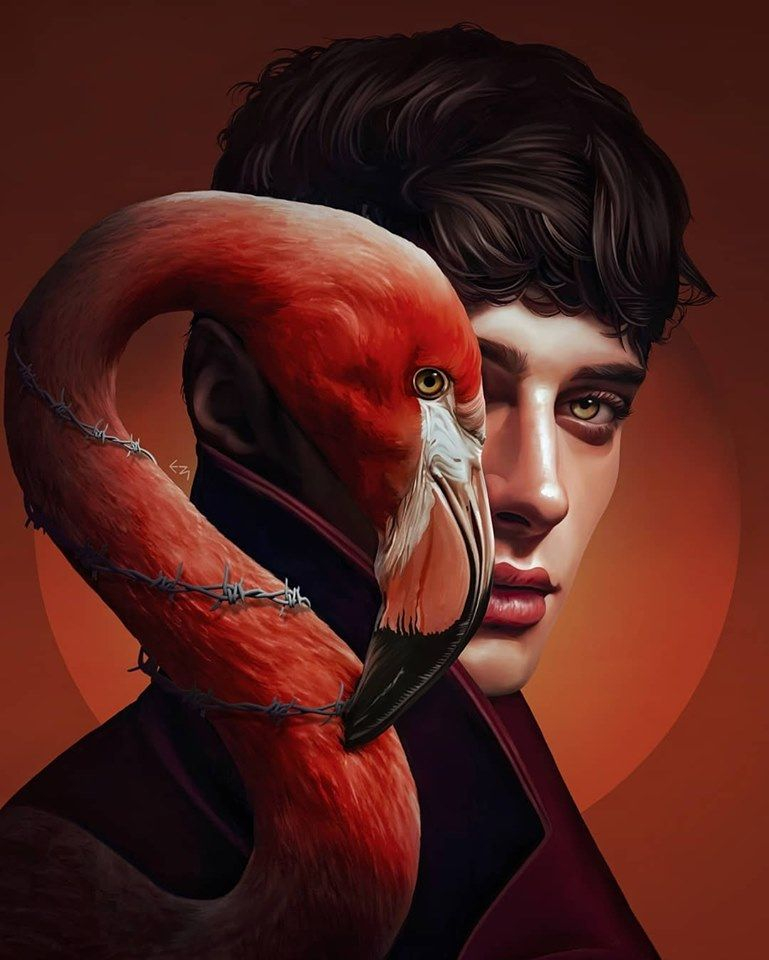

Find your Art Style
Course Details
Video Host: Ethan Becker
Video Duration:16 minutes
Want to hear artist Ethan Becker's take on art styles?
Course recommendations to follow along:
- Basic knowledge of art principles.
- Any art medium you want.
How to Find Your Art Style
One of the greatest challenges and opportunities in an artist’s career is discovering their artistic style. A signature style can make art memorable.
What Is an Art Style?

An art style is a throughline that characterizes a grouping of art. Generally, an art style is defined by a specific element that an artist has incorporated into all of their work. Developing your own artistic style requires a significant amount of time and focus. You can begin to understand and develop your unique art style by studying art history at large and more specifically, your favorite type of art, and identifying the artists you like. Doing so will not only help you create a cohesive body of art, but it can also help with your technical skill. Different artists have unique styles, which can vary by medium and message. Whether you are a watercolor painter, documentary filmmaker, anime or manga artist, or printmaker, developing a quintessential personal style makes your work noticeable.
How to Determine Your Medium
Before you can develop your unique art style, you must first know what medium you will use to convey your thoughts and expression. An art medium is the method in which you make art. This can consist of fine art, such as painting and sculpture, or performance arts, such as dance, acting, music, and writing. You can even get more specific within those categories. For example, if you focus on painting, you may choose to make acrylic paintings instead of oil paintings. Other art styles include architecture, filmmaking, sewing, and more. There is no set way to find your medium. Once you have chosen your main artistic medium, you can then play around and figure out your specific style within that lane of artistic expression.
Back to courses {% if user.is_authenticated %} Mark as finished {% endif %}